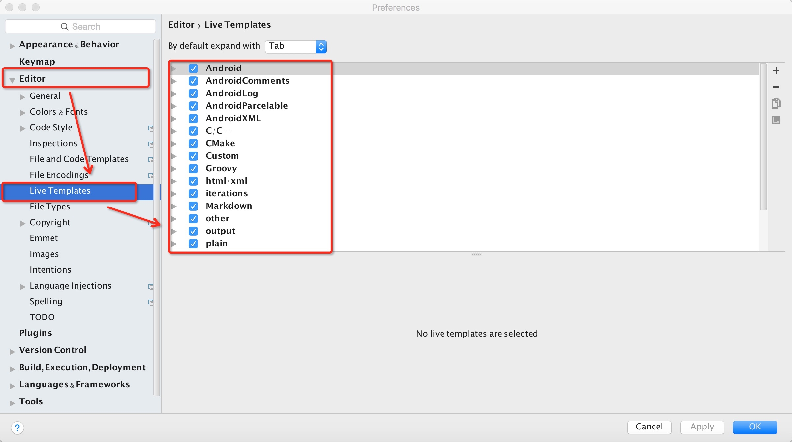
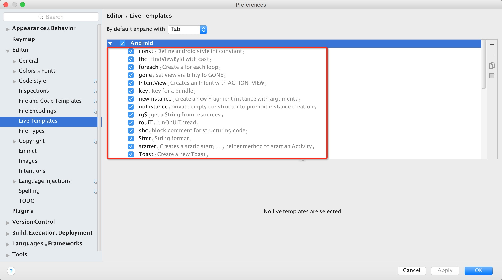
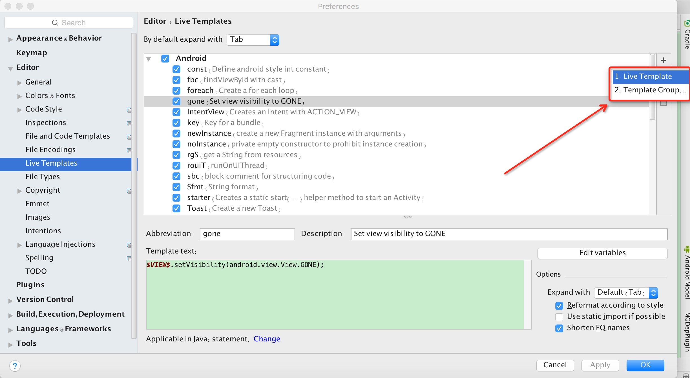
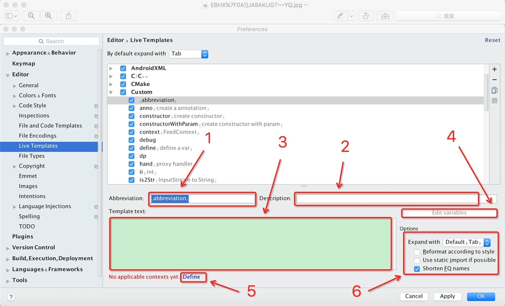
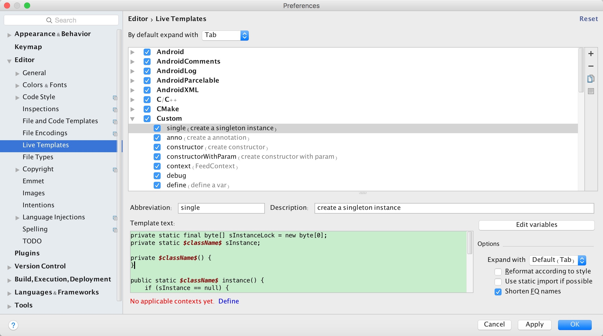
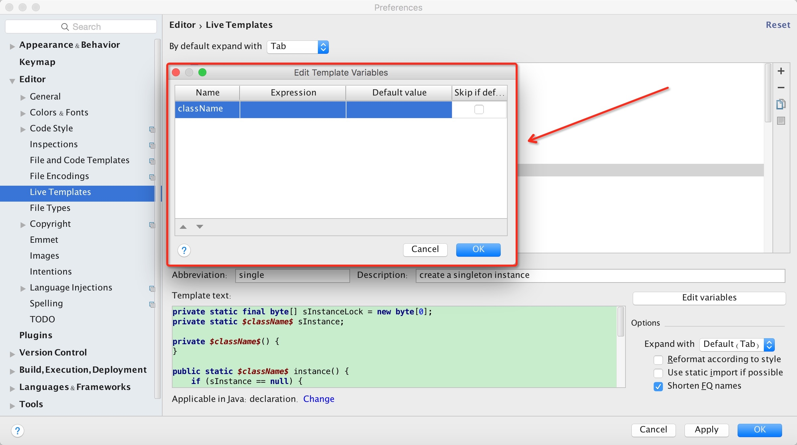
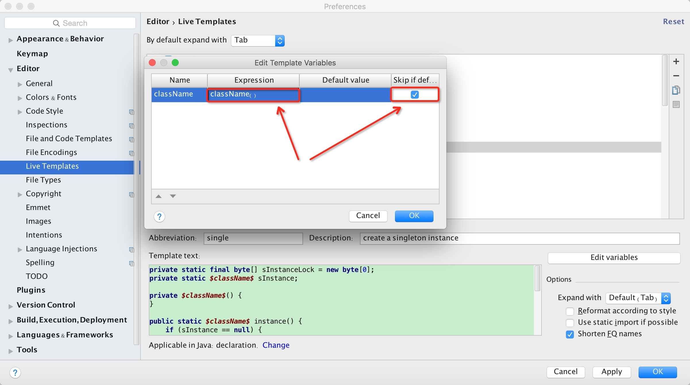
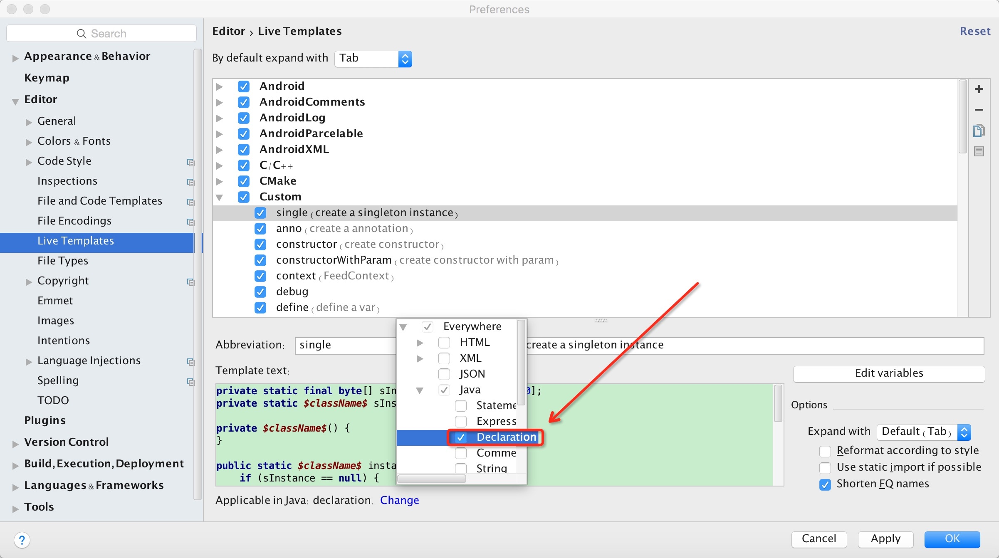

<!doctype html>
<html class="no-js" lang="en">
  <head>
    <meta charset="utf-8" />
    <meta name="viewport" content="width=device-width, initial-scale=1.0" />
    <title>
    
  Android Studio 模板之代码片段 - MagicalRice的Blog
  
  </title>
  
  
  <link href="atom.xml" rel="alternate" title="MagicalRice的Blog" type="application/atom+xml">
    <link rel="stylesheet" href="asset/css/foundation.min.css" />
    <link rel="stylesheet" href="asset/css/docs.css" />
    <script src="asset/js/vendor/modernizr.js"></script>
    <script src="asset/js/vendor/jquery.js"></script>
  <script src="asset/highlightjs/highlight.pack.js"></script>
  <link href="asset/highlightjs/styles/github.css" media="screen, projection" rel="stylesheet" type="text/css">
  <script>hljs.initHighlightingOnLoad();</script>
<script type="text/javascript">
  function before_search(){
    var searchVal = 'site:adolph.cc ' + document.getElementById('search_input').value;
    document.getElementById('search_q').value = searchVal;
    return true;
  }
</script>
  </head>
  <body class="antialiased hide-extras">
    
    <div class="marketing off-canvas-wrap" data-offcanvas>
      <div class="inner-wrap">


<nav class="top-bar docs-bar hide-for-small" data-topbar>


  <section class="top-bar-section">
  <div class="row">
      <div style="position: relative;width:100%;"><div style="position: absolute; width:100%;">
        <ul id="main-menu" class="left">
        
        <li id=""><a target="self" href="index.html">Home</a></li>
        
        <li id=""><a target="_self" href="archives.html">Archives</a></li>
        
        </ul>

        <ul class="right" id="search-wrap">
          <li>
<form target="_blank" onsubmit="return before_search();" action="https://google.com/search" method="get">
    <input type="hidden" id="search_q" name="q" value="" />
    <input tabindex="1" type="search" id="search_input"  placeholder="Search"/>
</form>
</li>
          </ul>
      </div></div>
  </div>
  </section>

</nav>

        <nav class="tab-bar show-for-small">
  <a href="javascript:void(0)" class="left-off-canvas-toggle menu-icon">
    <span> &nbsp; MagicalRice的Blog</span>
  </a>
</nav>

<aside class="left-off-canvas-menu">
      <ul class="off-canvas-list">
        
        <li><a target="self" href="index.html">Home</a></li>
        
        <li><a target="_self" href="archives.html">Archives</a></li>
        

    <li><label>Categories</label></li>

        
            <li><a href="Android.html">Android</a></li>
        
            <li><a href="%E6%9C%8D%E5%8A%A1%E5%99%A8.html">服务器</a></li>
        
            <li><a href="C++.html">C++</a></li>
        
            <li><a href="UI.html">UI</a></li>
        
            <li><a href="MySQL.html">MySQL</a></li>
        
            <li><a href="%E7%AE%97%E6%B3%95.html">算法</a></li>
        
            <li><a href="Game.html">Game</a></li>
        
            <li><a href="Python.html">Python</a></li>
        
            <li><a href="%E8%B7%A8%E5%B9%B3%E5%8F%B0%E5%BC%80%E5%8F%91.html">跨平台开发</a></li>
         

      </ul>
    </aside>

<a class="exit-off-canvas" href="#"></a>


        <section id="main-content" role="main" class="scroll-container">
        
       

 <script type="text/javascript">
  $(function(){
    $('#menu_item_index').addClass('is_active');
  });
</script>
<div class="row">
  <div class="large-8 medium-8 columns">
      <div class="markdown-body article-wrap">
       <div class="article">
          
          <h1>Android Studio 模板之代码片段</h1>
     
        <div class="read-more clearfix">
          <span class="date">2020/1/2</span>

          <span>posted in&nbsp;</span> 
          
              <span class="posted-in"><a href='Android.html'>Android</a></span>
           
         
          <span class="comments">
            

            
          </span>

        </div>
      </div><!-- article -->

      <div class="article-content">
      <p>代码片段是 Template 上的最小单位，因此它也具有最大的灵活性，支持多参数配置、TAB 切换、代码块包装等多种特性（IDEA 同样适用）。</p>

<p>创建一个单例类<br/>
<figure><figcaption>LiveTemplate1</figcaption></figure></p>

<span id="more"></span><!-- more -->

<p>自定义具体位置我们可以进入 IDE，<code>Preserences</code> - <code>Editor</code> - <code>Live Templates</code>，我们可以在右边栏看到一些列 IDE 预设的 template，如下图</p>

<p><figure></figure></p>

<p>这里我们展开 Android，可以看到下图</p>

<p><figure></figure></p>

<p>这里面所有的我们都可以使用，括号后面的内容是为了描述该模板的，你也可以取消前面的勾选来取消该模板。</p>

<p>其实系统预设的有很多都是很实用的，有兴趣的可以去试一试，不多说。这里主要看一下如何自定义模板，把一些常用的代码片段 DIY 到自己的模板库中，当下次再需要同样代码的时候只需要一个标识符就能迅速自动生成。</p>

<p>我们点击右上角的加号，我们可以看到两个选项一个是 Live Template，这个表示一个模板，另一个是 Template Group，这个表示一个模板所属的分组，就像上面看到的 Android，它就属于一个分组。</p>

<p><figure></figure></p>

<p>接下来我们先创建一个自己的 Template Group，名称随便取，不要与已有的分组重名就行，这里就取为 Custom。然后我们选中新建的这个 Custom 分组再创建 Live Template，会看到如下界面</p>

<p><figure></figure></p>

<p>我对这个界面做了数字标志，大致说下每个区域代表的含义</p>

<ul>
<li>区域 1：表示模板的缩写，也是我们最终使用时在编辑区输入的指令</li>
<li>区域 2：表示模板的提示，当输入对应缩写时，就会弹出这个提示</li>
<li>区域 3：这里就是最关键的模板区了，模板区包含两部分，一个是模板内容，它可以是任意字符串，另一个是模板变量，它有自己特殊的含义并且格式固定，首尾都是”\(” 符。模板变量又包含预设变量和自定义变量，比如”\)END$” 就是一个预设变量，它指定了模板导入结束后鼠标光标最终要停留的位置，而自定义变量则表示模板中一些动态性的部分，比如类名，它在不同的类中引入的结果是不同的。在多个自定义变量的情况下引入模板时，默认按 TAB 键切换至下个自定义变量位置。</li>
<li>区域 4：自定义变量的配置入口，可以给我们的自定义变量添加一些约束条件</li>
<li>区域 5：指定该模板的作用域，例如指定用于 Java 还是 groovy 等等</li>
<li>区域 6：提供一些引入模板的可选操作<br/>
这里我们来写一个生成单例的模板，我们按照下图定义好缩写，描述与模板内容</li>
</ul>

<p><figure></figure></p>

<p>模板内容的代码如下</p>

<pre class="line-numbers"><code class="language-text">private static final byte[] sInstanceLock = new byte[0];
private static $className$ sInstance;

private $className$() {
}

public static $className$ instance() {
    if (sInstance == null) {
        synchronized (sInstanceLock) {
            if (sInstance == null) {
                sInstance = new $className$();
            }
        }
    }
    return sInstance;
}
</code></pre>

<p>然后我们选择区域 4 来编辑我们的自定义变量，我们进去后可以看到如下弹窗</p>

<p><figure></figure></p>

<ul>
<li>Name 为自定义的变量名称</li>
<li>Expression 表示系统提供的一些方法</li>
<li>Default value 为改变量的默认值</li>
<li>Skip if define 勾选后，如果该变量被赋值则跳过，相当于引入过程中一次手动的 TAB<br/>
接着我们在 Expression 中选择 className()，并勾选 Skip if define，并点击确定</li>
</ul>

<p><figure></figure></p>

<p>最后我们点击区域 5 来选择模板的作用域，我们选择 <code>Java</code> — <code>Declaration</code></p>

<p><figure></figure></p>

<p>然后保存，我们的单例模板便生成成功了。测试下，在 IDE 中新建个 Java 类，在类的内部输入 single 便出现最上面的那个 UserManager 的效果。</p>

<p>当然除此之外还有使用”\(SELECTION\)” 来包装代码块的模板，这个使用场景相对较少这里就不举例了，主要使用的就是这种直接的模板模式。感觉一些常用的，特别是工具类中静态方法相关的，我们都可以抽取成模板，提高开发效率。</p>


    

      </div>

      <div class="row">
        <div class="large-6 columns">
        <p class="text-left" style="padding:15px 0px;">
      
          <a href="15818698865405.html" 
          title="Previous Post: Kotlin内置函数">&laquo; Kotlin内置函数</a>
      
        </p>
        </div>
        <div class="large-6 columns">
      <p class="text-right" style="padding:15px 0px;">
      
          <a  href="15779341495897.html" 
          title="Next Post: Android Studio 模板之文件">Android Studio 模板之文件 &raquo;</a>
      
      </p>
        </div>
      </div>
      <div class="comments-wrap">
        <div class="share-comments">
          

          

          
        </div>
      </div>
    </div><!-- article-wrap -->
  </div><!-- large 8 -->


 <div class="large-4 medium-4 columns">
  <div class="hide-for-small">
    <div id="sidebar" class="sidebar">
          <div id="site-info" class="site-info">
            
                <h1>MagicalRice的Blog</h1>
                <div class="site-des">技术博客</div>
                <div class="social">


  <a target="_blank" class="rss" href="atom.xml" title="RSS">RSS</a>
                
              	 </div>
          	</div>

             

              <div id="site-categories" class="side-item ">
                <div class="side-header">
                  <h2>Categories</h2>
                </div>
                <div class="side-content">

      	<p class="cat-list">
        
            <a href="Android.html"><strong>Android</strong></a>
        
            <a href="%E6%9C%8D%E5%8A%A1%E5%99%A8.html"><strong>服务器</strong></a>
        
            <a href="C++.html"><strong>C++</strong></a>
        
            <a href="UI.html"><strong>UI</strong></a>
        
            <a href="MySQL.html"><strong>MySQL</strong></a>
        
            <a href="%E7%AE%97%E6%B3%95.html"><strong>算法</strong></a>
        
            <a href="Game.html"><strong>Game</strong></a>
        
            <a href="Python.html"><strong>Python</strong></a>
        
            <a href="%E8%B7%A8%E5%B9%B3%E5%8F%B0%E5%BC%80%E5%8F%91.html"><strong>跨平台开发</strong></a>
         
        </p>


                </div>
              </div>

              <div id="site-categories" class="side-item">
                <div class="side-header">
                  <h2>Recent Posts</h2>
                </div>
                <div class="side-content">
                <ul class="posts-list">
	      
		      
			      <li class="post">
			        <a href="15818619982581.html">IDEA 远程一键部署Spring Boot到Docker</a>
			      </li>
		     
		  
		      
			      <li class="post">
			        <a href="15813395132789.html">Flutter VsCode插件</a>
			      </li>
		     
		  
		      
			      <li class="post">
			        <a href="15809146907844.html">Flutter 组件小记</a>
			      </li>
		     
		  
		      
			      <li class="post">
			        <a href="15808782889824.html">Flutter常用第三方库</a>
			      </li>
		     
		  
		      
			      <li class="post">
			        <a href="15767453112302.html">添加环境变量</a>
			      </li>
		     
		  
		      
		  
		      
		  
		      
		  
		      
		  
		      
		  
		      
		  
		      
		  
		      
		  
		      
		  
		      
		  
		      
		  
		      
		  
		      
		  
		      
		  
		      
		   
		  		</ul>
                </div>
              </div>
        </div><!-- sidebar -->
      </div><!-- hide for small -->
</div><!-- large 4 -->

</div><!-- row -->

 <div class="page-bottom clearfix">
  <div class="row">
   <p class="copyright">Copyright &copy; 2015
Powered by <a target="_blank" href="http://www.mweb.im">MWeb</a>,&nbsp; 
Theme used <a target="_blank" href="http://github.com">GitHub CSS</a>.</p>
  </div>
</div>

        </section>
      </div>
    </div>

  
    

    <script src="asset/js/foundation.min.js"></script>
    <script>
      $(document).foundation();
      function fixSidebarHeight(){
        var w1 = $('.markdown-body').height();
          var w2 = $('#sidebar').height();
          if (w1 > w2) { $('#sidebar').height(w1); };
      }
      $(function(){
        fixSidebarHeight();
      })
      $(window).load(function(){
          fixSidebarHeight();
      });
     
    </script>

    
<script type="text/javascript" src="https://cdnjs.cloudflare.com/ajax/libs/mathjax/2.7.7/MathJax.js?config=TeX-AMS-MML_HTMLorMML"></script><script type="text/x-mathjax-config">MathJax.Hub.Config({TeX: { equationNumbers: { autoNumber: "AMS" } }});</script>


  </body>
</html>
